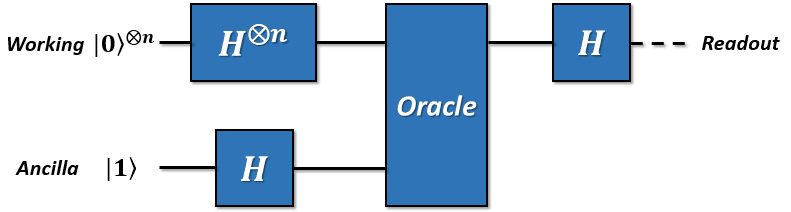

量子算法 Quantum Algorithm
量子算法是以量子态作为输入，量子逻辑门作为操作序列的算法。对于n个量子比特的系统，由于态的叠加和相位的存在，相当于会有$2^n$那么多的独立分量。此时，每一个门操作都会涉及到所有分量的同时变化，所以量子计算机具有（随量子比特数目的增长）指数级增长的运算能力。
Deutsch-Jozsa算法 Deutsch-Jozsa Algorithm
首先介绍一种最简单的量子算法，Deutsch-Jozsa算法。
D-J算法是一种经过设计的情况，它证明了量子算法相对于经典算法有指数级别的加速能力。D-J算法的问题描述是这样的：
如果你具有一个黑盒子，黑盒子里面是一些逻辑门，这个黑盒子可以接受n位的输入，并且产生一个1位的输出。并且我们已知黑盒子有两种可能性：1. 对于所有的输入，它只输出0或者1——我们称之为“常数”；2. 恰好对于一半的输入，输出为0，另一半输入，输出为1——我们称之为“平衡”。问题是：对于一个随机的盒子，要区分盒子到底是“平衡”的还是“常数”的。注意，我们不考虑这两种情况之外的输出分布情况，例如对于一个2位输入的黑盒子，输入00输出0，而输入01,10,11都输出1，此时它既不属于“平衡”也不属于“常数”，故被排除到了讨论之外。
如果在经典计算的角度上去看，我们要一个一个地检查输出的情况。因为输入是n位的，所以一共具有 种情况（每位上都是0/1两种可能）。不需要检查所有的情况来验证它到底是哪一种盒子，但是最坏的情况下，你检查了一半的情况（
），得到了一样的结果，例如全为0。这时，你需要再检查一种情况，如果它是0，那么一定是“常数”的；如果它是1，那么一定是“平衡”的。
其中Target_Function就是这个黑盒子，而bitNum代表输入比特个数。
然而，量子计算机只需要通过一步运算就可以得到结果。

如图：是这个过程的量子算法线路图。图中H代表Hadamard门，Oracle就是这个黑盒子。Readout表示在这里对量子比特进行测量。下面对整个过程进行理论分析。
第一步，制备n个工作（Working）比特到 态，与一个辅助（Ancillary）比特到
。
第二步，所有比特都经过Hadamard变换到叠加态上。由Hadamard门和量子态的矩阵形式，我们可得
我们发现 是个很让人讨厌的系数，而且它在整个操作过程中也只会出现在所有表达式的最外面，所以接下来的计算里面我们忽略归一化条件。忽略这个系数不会影响矩阵分量之间的比例关系，所以忽略它完全不会受到影响。除非我们马上要开始计算概率了，这个时候我们再去对矩阵做归一化就行了。
那么简化的描述就变成了
此时我们可以将所有的n个工作比特直积起来。回顾直积的定义，我们将两个工作比特直积起来
第二个等式单纯是二进制到十进制的转换。这样我们就得到了2位量子态所有情况的和。并且所有的相位项都为1。在此基础上再直积一个 ，就得到了3位量子态所有情况的和，即
……最后，一直直积n次，就可以得到
的态之和。这样，我们得到所有比特的共同量子态表达式为
第三步，将这个系统通过代表这个黑盒子的Oracle。Oracle是一种酉变换，它具有如下的形式
（如果你不能理解为什么Oracle要写成这种形式，请看下一章“Oracle是什么”。）
Oracle中的 是n位输入，1位输出的函数，也就是这个黑盒子的函数形式。其中
代表模2加法（异或）。所以，将量子态通过Oracle的时候，我们会得到：
意即 时，这一项会使
，即附带了一个-1的相位。当
时，不附带这个相位。
第四步，丢弃辅助比特，仅对前面的n个工作比特全部执行Hadamard操作。如果所有的 都具有相同的值，那么工作比特将继续保持所有分量的相位一致（全为1或者-1）；如果
具有一半0一半1的输出，那么工作比特将有一半的分量为1，另一半的分量为-1。
简单而言，如果Oracle是常数的，那么经过Oracle前后，量子态不会发生任何变化，此时将工作比特全部通过Hadamard门操作，必然会返回到初始的态（全部为 )。如果Oracle是平衡的，那么经过Oracle前后，量子态会变成和初态不同的态，再经过Hadamard门之后，必然不会得到初始态。（之所以要求0和1必须恰好各为一半，是为了保证此时量子态在初始态上面的概率分量为0，详见下面数学描述）
此时对所有比特进行测量。如果我们测到所有的量子比特都在0上，说明黑盒子是常数的。否则说明黑盒子是平衡的。
下面对这个过程进行数学描述。
任意基矢态（非叠加态）的Hadamard变换形式如下
其中 代表按位或操作。将它带入到上面的表达式中，可得
因为我们仅考察测量结果是否全部为0，所以令 ，计算这个分量上的系数，即
所以要么概率为1，要么概率正好一半一半抵消掉变成0。至此就是D-J算法的完全描述。我们发现量子算法的不同点在于它向黑盒子内部输入的是叠加态，所以只需要一步计算就能得到问题的答案。

经典算法的验证次数是 的，量子算法算上叠加态的准备和测量的时间，需要的操作步骤为
。所以我们说明量子算法相对于经典算法具有指数级别加速的特性。
D-J算法的问题在于它解决的问题既不实用，又具有很大的限制（要求平衡函数中必须恰好为一半0一半1）。另外，我们还对黑盒子本身的形态有要求。所以说D-J算法的理论意义是远大于其实用意义的。真正实用的量子算法将在后面进行介绍。
Oracle是什么？
在介绍其它的量子算法之前，我们要对Oracle进行一些必要的说明。
最早在图灵的博士论文中，提到了一种新的计算模型： “假定我们拥有某种解决数论问题的未知方法；比如说某种谕示。我们不深入这个谕示的本质，除了它不可能是一台机器这一点。通过谕示的帮助，我们可以构筑一种新的机器，它的基本过程之一就是解决某个给定的数论问题。”
图灵的这一段话描述的“谕示”即为Oracle。因为Oracle本身就能解决某种问题，在我们不深入Oracle本身时，我们可以通过Oracle扩展我们的计算能力。
这里的D-J算法，包括其它的某些量子算法都借用了图灵提到的这种新模型：谕示机。这里的Oracle是一种酉变换。它通常具有下面的两种形式：
注意：第一，这里的乘法不是按位乘法而是普通乘法。第二，在讨论这里的 代表的量子态时，并没有指定它们的位数。但是无论是加法还是乘法，它们的运算也是要做取模运算的（不存在溢出的情况）。
不论是哪种形式，都是在一组量子态为
时将函数
的值引入到另一个和它并列的一组量子态中。我们在讨论包含Oracle的算法时，我们都会假定Oracle能在一个单位时间内输出“谕示”内容的黑盒子——就像D-J算法中描述的那样。它内部的量子线路究竟如何，我们是不关心的。
但是也有另一种情况——我们要通过函数的解析表达式将一个函数用量子线路表达出来。这一种就像是分析Oracle的“内部构造”。虽然一般来说它具有和Oracle相同的酉变换形式，但是不能被看作一个单位时间内能告诉你“谕示”内容的黑盒子，所以它的构造方式决定了它的执行时间。我们称这种构造为“量子函数(Quantum function)”。
接下来的部分，我们会举两个相对实用的量子算法的例子。其中一个是用了一个代表数据库的Oracle，然后进行搜索的Grover算法；另一个是用量子线路构建“量子函数”，解决质因数分解问题的Shor算法。
Grover搜索算法 Grover's Searching Algorithm
接下来，我们介绍一种更有实用意义的算法，Grover搜索算法。
什么是搜索算法呢？举一个简单的例子，在下班的高峰期，我们要从公司回到家里。开车走怎样的路线才能够耗时最短呢？我们最简单的想法，当然是把所有可能的路线一次一次的计算，根据路况计算每条路线所消耗的时间，最终可以得到用时最短的路线，即为我们要找的最快路线。这样依次的将每一种路线计算出来，最终对比得到最短路线。搜索的速度与总路线数N相关，记为
。而采用量子搜索算法，则可以以
的速度进行搜索，要远快于传统的搜索算法。
那么我们怎么实现Grover搜索算法呢？
首先，我们先化简一下搜索模型。我们将所有数据存在数据库中，假设我们有n个量子比特，用来记录数据库中的每一个数据的索引，一共可以表示
个数据，记为N个。我们希望搜索得到的数据有M个。为了表示一个数据是否我我们搜索的结果。我们建立一个函数：
其中 为我们的搜索目标的索引值。也就是说，当我们搜索到我们的目标时，我们的函数值 置为1，如果搜索的结果不是我们的目标时， 置为0。
接下来，我们假设有一个量子Oracle可以识别搜索问题的解，是别的结果通过Oracle的一个量子比特给出。我们可以将Oracle定义为
其中 是一个结果寄存器, 是二进制加法，通过Oracle，我们可以实现，当搜索的索引为我们的目标结果时，结果寄存器翻转；反之，结果寄存器值不变。从而我们可以通过判断结果寄存器的值，来确定搜索的对象是否为我们要的目标值。
如此描述Oracle有些抽象，Oracle对量子态的具体操作是什么样的呢？同D-J算法相似，我们先将初态制备在
态上，
为查询寄存器，
为结果寄存器。经过Hardmard门操作后，可以将查询寄存器的量子态，变为所有结果的叠加态。换句话说，经过了Hardmard门，我们就可以得到所有结果的索引。而结果寄存器则变为
接下来，使其通过Oracle，可以对每一个索引都进行一次检验，如果是我们的目标结果，则将答案寄存器的量子态进行0、1翻转，即答案寄存器变为
，而查询寄存器不变。而当检验的索引不是我们要求的结果时，寄存器均不发生改变。因此，Oracle可以换一种表示方式
其中， 是查询寄存器的等额叠加态中的一种情况。
也就是说，Oracle的作用，是通过改变了解的相位，标记了搜索问题的解。
现在，我们已经将搜索问题的解通过相位标记区分出来了。那么如何能够将量子态的末态变为已标记出的态呢？
我们将问题换一种思路进行考虑。我们知道，当查询寄存器由初态经过Hardmard门后，会变为所有可能情况的等额叠加态。也就是说，它包含着所有搜索问题的解与非搜索问题的解。我们将这个态记为
我们将所有非搜索问题的解定义为一个量子态 ,其中 代表着 上所有非搜索问题的解的和。
同理，我们将所有搜索问题的解定义为一个量子态 ,其中 代表着 上所有搜索问题的解的和。
显然，
为我们期望的最终的量子态，而且
和
相互正交。利用简单的代数运算，我们就可以将初态
重新表示为
也就是说，我们用搜索问题的解的集合和非搜索问题的解的集合，重新定义了初始态换句话说，我们的初态属于 与 张成的空间。因此，我们可以用平面向量来表示这三个量子态，如图。

那么，Oracle作用在新的表示方法下的初态会产生怎样的影响呢？
我们知道，Oracle的作用是用负号标记搜索问题的解，因此相当于将
内每一个态前均增加一个负号，将所有的负号提取出来，可以得到：
对应在平面向量中，相当于将 做关于 轴的对称。
但是，仅仅有这一种操作，是无法将量子态从 变为 。我们还需要另一种对称操作。
第二种对称操作，是将量子态关于
对称的操作。这个操作由三个部分构成。
1、将量子态经过一个Hardmard门。
2、对量子态进行一个相位变换，将
态的系数保持不变，将其他的量子态的系数增加一个负号。相当于
酉变换算子。
3、再经过一个Hardmard门。
这三步操作的数学表述为
上述过程涉及到复杂的量子力学知识，如果你不理解，没关系。你只需要知道，这三部分的操作，只是为了实现将量子态关于 对称即可。如果你想了解为什么这三步操作可以实现，可以阅读关于量子计算相关书籍进一步理解。
前面介绍的两种对称操作，合在一起称为一次Grover迭代。假设初态 与 的夹角为 , 可以表示为
对比 式，很容易得到，
可以从几何图像上看到，每一次Grover迭代，可以使量子态逆时针旋转 。经历了k次Grover迭代，末态的量子态为：
因此，经过多次迭代操作，总可以使末态在 态上概率很大，满足精确度的要求。经过严格的数学推导，可证明，迭代的次数R满足
subsection{Shor算法质因数分解} {Shor's Algorithm For Factoring}
将两个质数乘起来，例如907*641=581387，是一件小学生都能做到的事情，用计算机去处理，看起来也没有什么难度。但是如果我给你581387，让你去找它的质因数，问题就变得很复杂了。也许你可以用计算机一个一个的去尝试，但是当数字变得更大，达到成百上千位的时候，就连计算机也无能为力。世界上面有很多问题都是这样，难以找到答案，但是一旦找到答案就很容易去验证。类似的问题我们称之为NP问题。NP问题之所以难于处理，是因为它的时间复杂度往往具有指数级别。这意味着随着问题规模的线性扩大，需要的时间却是指数增长的。利用这个原理，人们创造了RSA算法，它利用大数难以分解，但是易于验证的原理，对数据进行有效的加密。
量子计算机有将问题指数加速的能力，那是否意味着能攻克所有的NP问题呢？很遗憾，不能。但是幸运的是，我们有能力把“质因数分解”的时间复杂度降低到多项式级别，使大数分解问题的解决变为可能。这就是Shor算法。Shor算法的提出意味着RSA密钥的安全性受到了挑战。下面我们就来介绍Shor算法的内容。
subsubsection{问题的转化}
Shor算法首先将质因数分解问题转换成了一个子问题，下面我们来看问题的转换过程。假设我们待分解的数为$N$，
STEP 1：随机取一个正整数，定义一个函数:
STEP 2：这个函数一定是一个周期函数，寻找到它的周期为。（这一步将使用量子计算机完成）
STEP 3：如果为奇数，那么回到STEP 1。如果
为偶数，那么计算
。
STEP 4：如果，那么回到STEP 1。否则，计算
和
分别对于N的最大公约数。
STEP 5：这两个最大公约数就是的两个质因数
举个例子，对于21而言，假设我们选择，那么
STEP 1：定义函数
STEP 2：发现它的周期为6。
STEP 3：计算出
STEP 4：计算7和9分别对于21的最大公因数
检验知7和3都是21的质因数，于是我们得到了问题的答案。
subsubsection{函数的引入}
我们要为STEP 1中描述的函数找到它引入量子计算机的方式。这种函数被称为模指数（Modular Exponential）函数，在经典逻辑电路中，它已经被以各种形式设计了出来。所以现在，我们要为它准备一个量子线路的版本。
根据在“Oracle是什么”这一节里面提到的量子函数概念，我们需要构建出一个酉变换U使得：
这种情况是一种比较普适的情况，我们令，那么后面的这一组量子比特就作为辅助比特存储了
的计算结果。我们先来找一种比较简单的情况来分析具体问题，可以便于对其中的变量分解转换的理解。选取要分解的质因数15，和一个比15小的任意正整数7，所以我们要构建这样的酉变换：
首先要提到的一点是要表示 ，就意味着我们的辅助比特的取值是从0~14的，为了表示这个数，需要用到4个比特，即从0000~1110。对于前面的工作比特来说，它的位数选择比较自由，而且选取的位数越多，我们得到正确结果的概率越大，这一点在后面会解释。
乍一看这个函数让我们有些无从下手，所以我们要对它进行一定的转换，比如先把x转化为二进制：
是x转换为二进制后每一位上对应的数码，所以它的取值无非是0或者1。这样我们就可以简单的用一个控制酉操作得到每一项，即
其中 是单位操作。所以问题就转化为了构建“控制模乘”操作
。
顺带一提，因为我们关注的点不是如何纯粹的用量子线路来描述里面的每一步操作，某些操作也不引入额外的计算时间复杂度，那么这些操作是可以用经典计算机代为完成的。就比如说这里的 。注意到
我们只需要事先用经典计算机将（N是选取的工作位数）全部计算出来，就可以在接下来的设计时只考虑对应的几种情况。
我们可以看出， ，根据这个公式，可以列举出来对于不同的
的取值情况，上述表达式的取值（这个过程用经典计算机就可以完成）。在例子中的这种情况中，有
也就是说我们只需要对应设计 ，
两种就可以达到设计目的了。
最后我们来看一下引入了函数，量子态变成了什么。
首先是一组Hadamard变换，它们只作用在一组N个工作比特上，所以这个总状态就会变成
在量子函数作用在这一组量子态时，相当于这个函数的自变量从0到 的所有取值都被保存到了辅助比特上。也就是说，工作比特的每个状态分量都和辅助比特的一个状态分量纠缠在了一起。
在之前的计算中，我们知道了 是一个周期函数，假设它的周期是T。明显地，
那么
回到 ，
的例子中，我们有
因为这个态是一个纠缠态，所以当我们测量辅助比特时，工作比特就会坍缩成对应的那种情况。但是不论你得到辅助比特的测量值是什么，工作比特总是会只保留为每个分量都恰好为一组周期数的叠加态。那么这一组叠加态表示的数的周期将会通过量子傅里叶变换来快速完成。
subsubsection{量子傅里叶变换}
寻找态的周期可以通过量子傅里叶变换来快速完成。我们先以 为例子来看看量子傅里叶变换是怎么做的，之后你就会发现它对于1,5,9,13...或是2,6,10,14...都能得到类似的结果。
如图所示，量子傅里叶变换有两个重要的部分，第一是递归的依次控制旋转（CROT）操作，第二部分是改变比特的顺序。
数学表达上，每一项都是用离散傅里叶变换的形式去处理的。
其中$x_j$表示输入量子态的第$j$个分量，而$k$表示输出量子态的分量，如果用N个量子比特表示，则。而从矩阵上来看，则为
不妨假设工作比特只有4个。那么输入的量子态则为
这样就代表 ，并且
，其它分量上都为0。根据傅里叶变换的公式我们可以计算出
这里就是工作比特执行完量子傅里叶变换之后的输出态上的每个分量（第k个分量）的值。从而我们可以得到
其它情况下
那么最后输出的量子态则为
subsubsection{利用连分数分解得到周期}
在最后的测量时，我们会随机得到0，4，8，12四个结果中的一个，但是这个结果并不是周期。但是量子傅里叶变换的结果揭示了一点：
其中我们假设测量结果是 ，总工作比特数为
，函数的周期为
。那么我们有
其中 为一个未知的整数。所以我们可以通过这个式子近似地找出函数周期。例如
，
，我们有
这样我们就找到了周期r=4。Shor算法的量子计算机部分至此解出。你可以检验一下 这个函数的周期是否确实为4。你也可以检验一下
和
和15的最大公因数是否就是15的质因数。
有时候并不一定能顺利约出合理的$r$，这样我们就可以通过连分数分解法，得到一个逼近的分数，从而获得$r$。这里就不再细讲了。
subsubsection{Shor算法的总结}
Shor算法首先把问题分解为了“经典计算机部分”和“量子计算机部分”。然后利用了量子态的叠加原理，快速取得了函数在一个很大范围内的取值（对于个工作比特而言，取值范围为0~
）。由于函数本身是周期的，所以自变量和函数值自动地纠缠了起来，从而对于某一个函数值来说，工作比特上的态就是一组周期数态的叠加态。在取得“周期数叠加态”之后，我们自然可以通过傅里叶变换得到这组周期数的周期，从而快速解决了这个问题。
反过来看，之所以找函数周期问题能被量子计算机快速解决，是因为在工作比特上执行了一组Hadamard变换。它在“量子函数”的作用下，相当于同时对指数级别的自变量上求出了函数值。在数据量足够大，周期足够长的情况下，这样执行的操作总量一定会小于逐个取值寻找这个函数值在之前是否出现过——这样的经典计算机“暴力破解”法要快得多。
Shor算法的难点在于如何通过给出的，
来得到对应的“量子函数”形式。进一步地讲，是否存在某种方法（准确地说是具有合理时间复杂度的方法）得到任意函数的“量子计算机版本”？限于笔者知识水平不足，我只能给出目前大概的研究结论是存在某些无法表示为量子计算机版本的函数，但是幸运地是Shor算法属于可以表示的那一类里面。
最后，我们可以发现，量子计算机之所以快，和量子计算机本身的叠加特性有关，它使得在处理特定问题时，比如数据库搜索，比如函数求周期……有着比经典计算机快得多的方法。但是如果经典计算机在解决某个问题时已经足够快了，我们就不需要用量子计算机来解决了。
就像Shor算法里面所描述的那样——我们将问题分解为了量子计算机去处理的“困难问题”和经典计算机去处理的“简单问题”两个部分一样。所以，量子计算机的出现，不代表经典计算机将会退出历史舞台，而是代表着人类将要向经典计算机力所不及的地方伸出探索之手。靠着量子计算机，或许我们能提出新的算法解决化学问题，从而研制出新型药物；或许我们可以建立包含所有信息的数据库，每次只需要一瞬间就能搜索到任何问题……量子云平台是我们帮助量子计算机走出的第一步，但接下来的路怎么走，我们就要和你一同见证了。